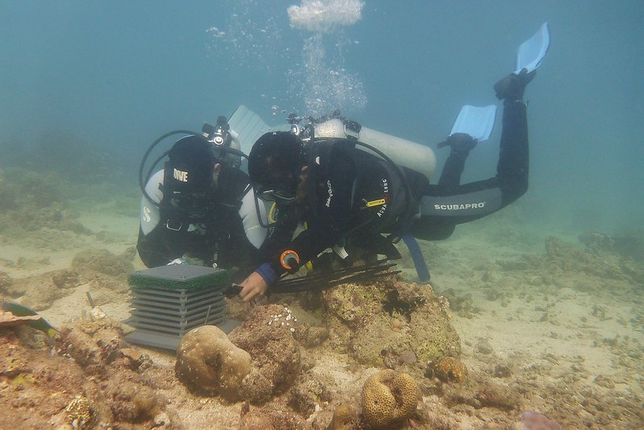
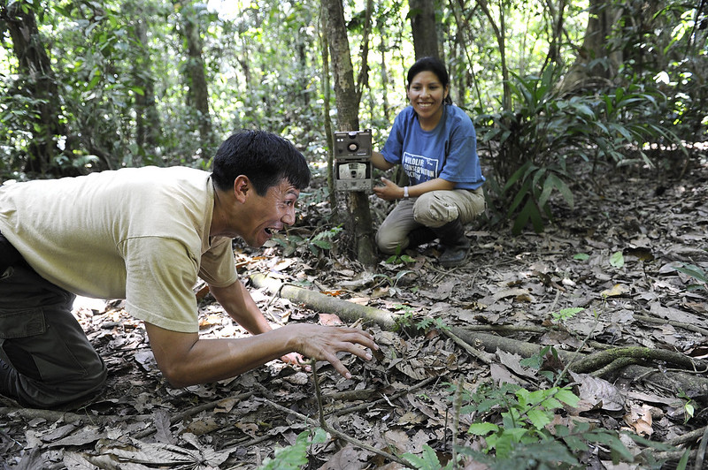

IoT & Sensors
What is the IoT and what are sensors?
The Internet of Things (IoT) refers to a network of objects connected over the internet. IoT-connected devices include everyday items such as phones, doorbells, cars, watches, and washing machines. The IoT links these devices for a range of tasks, processes, and environments – from streetlights on a “smart” urban grid to refrigerators in a “smart home” and even to “smart” pacemakers inside human bodies, which belong to the category of so-called “wearable” smart technology. Once installed and connected, these devices can communicate with one another with reduced human involvement.

An integral component of the IoT are sensors, devices that detect and respond to changes in an environment from a variety of sources — such as light, temperature, motion, and pressure. When placed on devices and linked to an IoT network, sensors can share data in real time with other connected devices and management systems.
It is important to note that the IoT is an evolving concept, continually expanding to include more devices and increasing the level of connection and communication between devices.
How does IoT work and how do sensors work?
IoT devices connect wirelessly to an internet network. They are provided with unique identifiers (UIDs) and have the ability to transmit data to one another over the network without human intervention. IoT systems may combine the use of wearable devices, sensors, robots, data analytics, artificial intelligence, and many other technologies.
Sensors generally work by taking an input — such as light, heat, pressure, motion, or other physical stimuli— and converting this into an output that can then be communicated to a human user through some kind of signal or interface (for example, the display on a digital thermometer or the noise of a fire alarm). The output could also be forwarded directly into a larger, extended system such as an industrial plant. Usually, devices will have multiple sensors: for example, a smartphone has a touchscreen, a camera, a GPS, and an accelerometer to measure acceleration.
Sensors can be “smart” or “non-smart,” meaning that they may connect to the Internet or not. Smart sensors accept input from their surroundings and convert it into digital data using in-built computing capabilities. These data are then passed on for further processing. Take for example a “smart” irrigation system: an Internet-connected water meter might be used to continually measure the quantity and quality of the water in a reservoir. These data would be transmitted in real-time to a water-management interface that a human could interpret to adjust the water delivery, or alternately, the irrigation system could be programmed to self-adjust without human intervention, shutting off automatically when the water is below a certain quality or quantity.
Smart sensors may be considered IoT devices themselves. The sensor in a mobile phone that automatically adjusts the brightness of its screen based on ambient lighting is an example of a smart sensor. Remote sensing involves the use of sensors in applications in which the sensing instrument does not make physical contact with the object or phenomenon being measured and recorded, for example, satellite imaging, radar, aerial photography, or videography by drones. The US National Aeronautics and Space Administration (NASA) has a list of the types of sensors used in remote sensing instruments. This short video provides a basic introduction to the different types of sensors.
How is the IoT and how are sensors relevant in civic space and for democracy?
The IoT has been harnessed for a range of civic, humanitarian, and development purposes, for example, as part of smart cities infrastructure, urban traffic management and crowd-control systems, and for disaster risk reduction by remote-sensing environmental dangers. The city of London has been using the IoT and big data systems to improve public transportation systems. (See Smart Cities page) These systems handle unexpected delays and breakdowns, inform passengers directly regarding delays, create maps of common routes via anonymized data, offer personalized updates to travelers, and make it possible to identify areas for improvement or increased efficiency. Transportation via autonomous vehicles represents one of the domains where the IoT is anticipated to bring important advancements.
Many uses of the IoT are being explored in relation to health care and assistance. For instance, wearable glucose monitors in the form of skin patches can continuously and automatically monitor the blood glucose levels of diabetic persons and administer insulin when required.
Device systems equipped with sensors are frequently used by researchers, development workers, and community leaders for gathering and recording data on the environment— for example, air and soil quality, water quality and levels, radiation levels, and even the migration of animals.
Sensor datasets may also reveal new and unexpected information, enabling people to tell evidence-backed stories that serve the public interest.
Finally, the use of the IoT is also being explored in relation to human rights defenders. IoT systems equipped with sensors can be used to document human-rights violations and collect data about them. A bracelet developed by the Natalia Project automatically triggers an alert when forcibly removed or activated by the wearer. The bracelet uses GPS and mobile networks to send a pre-defined distress message, along with the location of the device and a timestamp, to volunteers present nearby and to the headquarters of Civil Rights Defenders, a Swedish NGO.
However, along with these exciting applications come serious concerns. Digital devices have inherent vulnerabilities, and linking devices to the Internet and to one another magnifies security threats such as stalking, data leaks, and violations of personal privacy. IoT sensors can be used to monitor and surveil minority communities by policing organizations which may lead to civil-rights abuses. These concerns and other implications of a vast and pervasive network of data-collecting devices are explored in the Risks section.
Opportunities

The IoT and sensors can have positive impacts when used to further democracy, human rights, and governance issues. Read below to learn how to more effectively and safely think about IoT and sensors in your work.
Monitoring and EvaluationIoT systems can facilitate the continuous monitoring of small and intricate details, transmitting these data to systems that can analyze and evaluate them in real time. This kind of monitoring has many implications for resource efficiency and sustainability. In Mongolia, inexpensive temperature sensors have been used in the monitoring and evaluation of a subsidy program that offered energy-efficient stoves for home heating. The stoves aimed to reduce air pollution and fuel expenditure. Information obtained from the sensors led to the conclusion that fuel efficiency had indeed been achieved even though the coal consumption of the surveyed households had remained constant. Other examples of sensor-enabled monitoring include the Riffle (Remote, Independent Field Friendly Logger Electronics), a set of open-source instrument designs that enables communities to collect data and monitor their water quality. The designs deploy different types of sensors for measuring parameters such as the temperature, depth, turbidity, and conductivity of water. Riffle is a part of Public Lab’s Open Water Project.
IoT systems, when installed legally in private homes and workplaces, can provide security. Smart locks, video cameras, and motion detectors can be used to alert to or prevent against possible intrusion, while smart smoke detectors and thermostats can alert to and react to fire, dangerous air quality, etc. “Smart homes” advertise these security benefits. For instance, a video doorbell can send an alert to your smartphone when motion is detected and record a video of who or what triggered it for later viewing. Smart locks allow you to lock and unlock your doors remotely, or to grant access to guests through an app or keypad. Of course, these home security conveniences come with their own concerns. Amazon’s Ring home security system has been in the headlines multiple times after stories of hacking and vulnerabilities surfaced.
IoT systems, when paired with data analytics and artificial intelligence, can help with early warnings about environmental or health risks, for example about the possibility of floods, earthquakes, or even the spread of infectious diseases like Covid-19. The company Kinsa Health has been able to leverage data gathered from its Bluetooth-connected thermometers to produce daily maps of which US counties are seeing an increase in high fevers, thereby offering real-time indications of where the disease may be clustering. Sensor networks combined with data analytics can be used by governments and ecologists to detect environmental changes that may indicate an emerging threat — for instance, a dangerous rise in water level or change in air quality — information that can be analyzed and shared rapidly to better understand, respond to, and alert others to the threat.
By allowing vehicles to communicate with one another and with road infrastructure — like traffic lights, charging stations, roadside assistance, and even sensor-lined highway lanes — the IoT could improve the safety and efficiency of road transport. Autonomous vehicles have a long way to go (both in terms of the technology and safety and the legal frameworks necessary for proper functioning); but the IoT is making self-driving vehicles a possibility, bringing new opportunities for car sharing, urban transport, and service delivery.
Risks
The use of IoT and sensors can also create risks in civil society programming. Read below on how to discern the possible risks associated with the use of these technologies in DRG work.
Mass surveillance and stalkingIoT systems generate large amounts of data, which in the absence of adequate protections, have been used by governments, commercial entities, or other actors for mass surveillance. IoT systems collecting data from their environments may collect personal data about humans without their knowledge or consent, or process and combine these data in an invasive, non consensual manner. IoT systems — when coupled with monitoring capabilities, AI systems (for example, face recognition and emotion recognition), and big data analysis — present opportunities for mass surveillance and potentially for repressive purposes that harm human and civil rights. Indeed authoritarian governments have a history of using IoT devices and so called ‘smart cities’ as methods of oppression and silencing dissent.
The United States Federal Trade Commission (FTC) identified three key challenges the IoT poses to consumer privacy (2015): ubiquitous data collection, potential for unexpected uses of consumer data, and heightened security risks. IoT systems generate immense amounts of data and create large datasets. Meanwhile, IoT applications, especially consumer applications, are known to have privacy and security vulnerabilities, the risks of which are magnified given the quantity and potentially sensitive nature of data involved. Seemingly harmless information, or information collected without the full awareness of the people involved, can bring serious threats. For example, a visualization of exercise routes of users published by a fitness tracker app exposed the location and staffing of US military bases and secret outposts inside and outside the country.
Commercial entities may use data obtained from IoT systems to influence the behavior of consumers, for example through targeted advertising. Indeed, sensors in stores are increasingly being used to leverage data about users based on their in-store shopping behavior.
See also the Data Protection, Big Data, and Artificial Intelligence resources for additional information on privacy, data protection, and security concerns.
The hardware and software of IoT devices are known to be highly vulnerable to cyberattacks, and cybercriminals actively try to exploit these security vulnerabilities. Increasing the number of devices on an IoT network means increasing the surface area for cyberattacks. Common devices such as Internet-connected printers, web cameras, network routers, and television sets are used by cybercriminals for malicious purposes, such as executing coordinated distributed denial of service (DDoS) attacks against websites, distributing malware, and breaching the privacy of individuals. There have been numerous incidents of hackers gaining access to feeds from home security cameras and microphones, including from monitors that enable parents to keep an eye on their infant while they are away. These incidents have led to a demand to regulate entities that design, manufacture and deploy commercial IoT devices and systems.
The ever-increasing use of automation brings ethical questions and concerns that may not have been considered before the arrival of the technology itself. Here are just a few examples: Would smart devices in the home recognize voice commands given by people who speak different languages, dialects, and in different accents? Would it be appropriate to collect voice recording data in these other dialects and accents— in a fully consensual and ethical way — in order to improve the quality of the device and its ability to serve more people?
Data obtained from IoT devices are also increasingly being used as digital evidence in courtrooms or for other law enforcement purposes, raising questions about the ethics and even the legality of such use, as well as about the accuracy and appropriateness of such data as evidence.
Vendor lock-in, insufficient interoperability between networks, and the challenge of obtaining informed consent from data subjects must also be taken into account. See more about these risks in the Digital IDs and Data Protection resources.
Questions
If you are trying to understand the implications of IoT and sensors in your work environment, or are considering using some aspects of IoT and related technologies as part of your DRG programming, ask yourself these questions:
-
Are IoT-connected devices suitable tools for the problem you are trying to solve? What are the indicators or guiding factors that determine if the use of IoT or sensor technology is a suitable and required solution to a particular problem or challenge?
-
What data will be collected, analyzed, shared, and stored? Who else will have access to this information? How are these data protected? How can you ensure that you collect the minimum amount of data needed?
-
Are any personal or sensitive data being collected? How are you obtaining informed consent in this case? Is there the possibility that devices on your network will combine datasets that together create sensitive or personally identifying information?
-
Are the technologies and networks you are using sufficiently interoperable for you to bring new technologies and even new providers into the network? Are they designed with open standards and portability in mind? Is there any risk of becoming locked into a particular technology provider?
-
How are you addressing the risk of vulnerabilities or flaws in the software? How can you mitigate these risks from the start? For instance, is it necessary for these devices to connect to the internet? Can they connect to a private intranet or a peer internet network instead?
Case studies
IoT to enhance the process of fortifying flour with key nutrients
Sanku (Project Healthy Children), an organization that aims to end malnutrition around the world, is equipping small flour mills across Africa with IoT technology to provide nutritious fortified flour to millions of people. Daily production data are sent in real-time, via the cellular link, to a dashboard that allows the organization to monitor the mills’ performance. Data collected include flour produced, nutrients dispensed, people reached, and any technical issues with the machine’s performance. “The IoT is enabling us to completely automate our operations and how we run our business.… It’s no longer a struggle trying to determine which mills need to be visited, which dosifiers need maintenance, and when products need to be delivered to avoid stock-outs.”
The Guardian Project’s Proof Mode is an open-source camera application for mobile devices designed for activists, human rights defenders, and journalists. When a photo or video is shot using the device, the app gathers as much metadata as possible, such as a timestamp, the device’s identity, and location from different sensors present in the device. The app also adds a publicly verifiable digital signature to the metadata file, all of which ultimately provide the user with secure and verifiable digital evidence.
Another app by the Guardian Project, Haven, uses the sensors present in a mobile device, such as the accelerometer, camera, microphone, proximity sensor, and battery (power-on status) for monitoring changes to a phone’s surroundings. These changes are a) stored as images and sound files, b) registered in an event log that can be accessed remotely or anytime later, and c) used to trigger an alarm or to send secure notifications about intrusions or suspicious activity. The app developers explain that Haven is designed for journalists, human rights defenders, and people at risk of forced disappearance.
Temperature sensors to measure stove use behaviors in Ulaanbaatar
“…[I]n an impact evaluation of the [subsidy program]…, which aimed to reduce air pollution and decrease fuel expenditures through the subsidized distribution of more fuel-efficient heating stoves…[t]o gather unbiased and precise measurements of stove use behavior, small temperature sensors (stove use monitors or SUMs) were placed in a sub-set of surveyed households… The SUMs data on ambient temperature also indicated that homes with [subsidy program] stoves were kept warmer than those with traditional stoves, although the fuel used was the same on average. This suggests that households were utilizing fuel efficiency to increase home temperatures, whether knowingly or not. Ultimately, inexpensive temperature sensors were critical for collecting accurate outcome data on and explaining unexpected results.”
Using IoT sensors for healthcare
IoT sensors, like wearable heart monitors or sleep trackers, can help healthcare professionals in the treatment of patients. Monitors use connected information systems to analyze relevant health data for diseases like Parkinson’s, Alzheimers, and heart disease by helping doctors understand patterns, thereby providing better healthcare service delivery. By providing preventative care, healthcare systems can reduce costs and increase service to a wider range of patients.
Motion sensors to monitor hand-pump functionality in Rwanda, Case study 3
“In the featured pilot project in Rwanda, more than 200 censors were installed at water pumps, with data from each sensor transmitted wirelessly through the cellular network to a dashboard for the operations and maintenance team. The dashboard displays the real-time status of each pump equipped with a sensor. This enables operations and maintenance teams to employ an “ambulance” model, dispatching teams only to water points flagged for repair or check-up.”
References
Find below the works cited in this resource.
- Alton, Larry, (2015). Improved Public Transport for London, Thanks to Big Data and the Internet of Things. Mayor of London, London Datastore.
- Earthdata website, (n.d.). Remote sensors. National Aeronautics and Space Administration (NASA).
- Molla, Rani, (2019). Consumer groups issue product warning for Amazon Ring after latest video hack. Vox.
- Ramirez, Edith, (2015). Opening Remarks of FTC Chairwoman Edith Ramirez Privacy and the IoT: Navigating Policy Issues. Federal Trade Commission (FTC).
- Ray, Partha, et al., (2017). Internet of Things for Disaster Management: State-of-the-Art and Prospects. IEEE Access.
- Tech Republic website, (n.d.). Internet of Things.
- Waite, Matt, (2013). How sensor journalism can help us create data, improve our storytelling. Poynter Institute.
- Ziegeldorf, Jan, et al., (2014). Privacy in the Internet of Things: threats and challenges. Security and Communication Networks 7(12).
- Sloan, Hannah. (2018). Human rights and IoT: Tracking Violations and improving protections. IOT For All.
Additional resources
- Henricks, Drew, (2015). The trouble with the Internet of Things. Mayor of London, London DataStore.
- Krahulcova, Lucie, (2017). Secure all the things! How to protect human rights on the Internet of Things. Access Now.
- Meola, Andrew, (2020). How smart city technology & the Internet of Things will change our apartments, grids and communities. Business Insider.
- Thierer, Adam, et al., (2015). The Internet of Things and Wearable Technology: Addressing Privacy and Security Concerns without Derailing Innovation. SSRN.